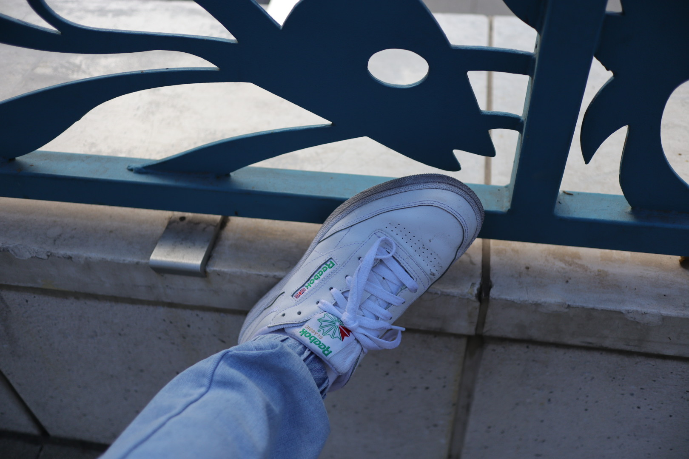
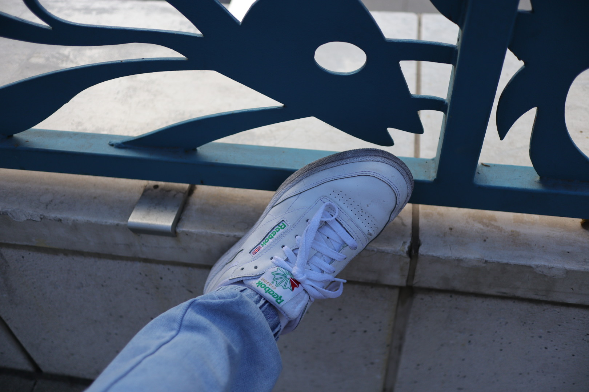

Jarett Yip
Given the unique start of my Freshman year during a pandemic, I am especially hungry to actively seek internships and opportunities to learn as much as I can, as fast as I can. I have always had an intense passion for creativity and production, and am currently seeking out companies and businesses with a similar drive for creation and innovation. I would like to make a lot of money and be able to retire at the age of 23 (one year after college graduation). Currently, I am working with UCR Unmanned Aerial Systems as a Visual Media Specialist, producing promotional and instructional content to build a more unified and cohesive brand going into 2021. This is also not a passion of mine and feel unfulfilled doing this for the rest of my life. Currently, I am working with UCR Unmanned Aerial Systems as a Visual Media Specialist, producing promotional and instructional content to build a more unified and cohesive brand going into 2021. This is also not a passion of mine and feel unfulfilled doing this for the rest of my life.
In High School, I was a part of my school district's communications internship, where I learned valuable professional and technical skills in the world of business, journalism, and innovative media. I am self-taught in the programs of Final Cut Pro, Adobe Illustrator, and Photoshop. I am not passionate about working to be completely honest, I do not find joy in work or being under someone else’s rule. I would love to be able to live off the land alone and on a ranch somewhere. I am passionate about living on the midwest although I could see myself living on either coast. Given the unique start of my Freshman year during a pandemic, I am especially hungry to actively seek internships and opportunities to learn as much as I can, as fast as I can. I have always had an intense passion for creativity and production, and am currently seeking out companies and businesses with a similar drive for creation and innovation. I would like to make a lot of money and be able to retire at the age of 23 (one year after college graduation).
Back all the way in High School, I was a part of my school district's communications internship, where I learned valuable professional and technical skills in the world of business, journalism, and innovative media. I am self-taught in the programs of Final Cut Pro, Adobe Illustrator, and Photoshop. I am not passionate about working to be completely honest, I do not find joy in work or being under someone else’s rule. I would love to be able to live off the land alone and on a ranch somewhere. I am passionate about living on the midwest although I could see myself living on either coast. I just want to be out in nature and away from society and all the technology that beeps and buzzes for my already waning attention span.
Experience
Developer
• Developed websites for Mind 2 Movement Institute
• Content creation
• Experience with HTML, CSS, Kartra, SQL
Bitcoin Enthusiast
• Chief Executive Assistant of Mr. Bitcoin
• Risen on a daily basis
• Grinded shortly after rising
• Hustled like no one else in the game
Education
UC Riverside
Portfolio



